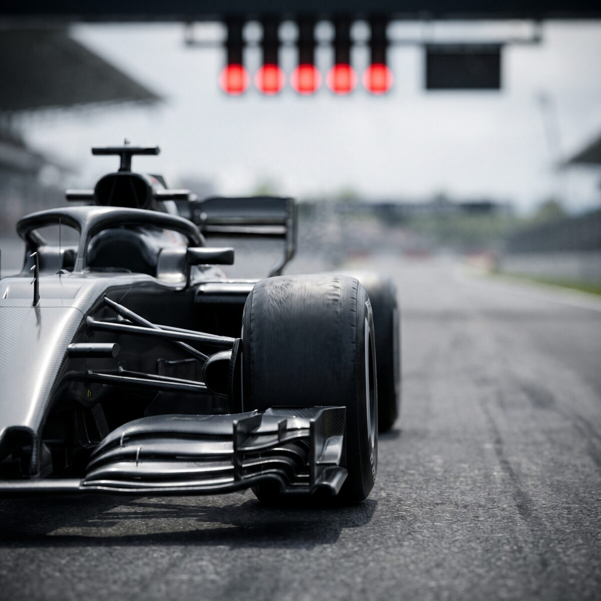

Norris evita punição após quase acertar Piastri sob safety car

A FIA investigou Lando Norris depois que o britânico quase bateu em Oscar Piastri ao evitar o Mercedes parado de George Russell, sob safety car no GP da Malásia. Os comissários decidiram só por uma advertência, porque Norris saiu da pista para evitar a batida e não ultrapassou de forma ilegal.
Ele manteve o nono lugar e os dois pontos.